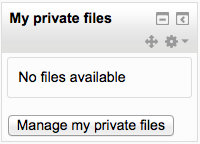
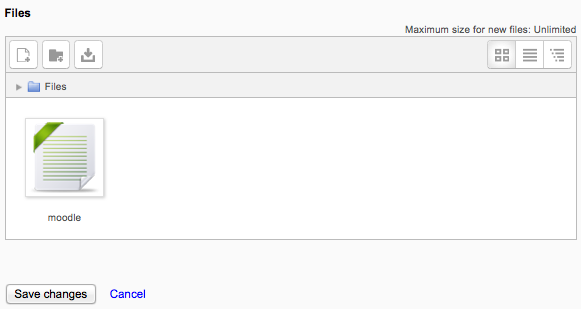

In Moodle, each user has a private files area for uploading and managing a set of files.
The private files area is accessible via Navigation > My home > My profile > My private files or the My private files block. If the private files repository is enabled by a site admin, it is available as a source within the filepicker when selecting files to use in a course.
To add a file to your private files area
- On the Navigation menu, click My profile > My private files
- The file manager will appear.
- If desired, create a folder for your file(s)
- Click on the Add button to upload from the File picker or drag and drop from your desktop. It will look like the files are already there, but they aren’t until you do the next step!
- Click the ‘Save changes’ button
Once uploaded, files will appear as thumbnails. Clicking the icons top right will display them in table or list view as an alternative.

The size limit for each user’s private files area is set by a site administrator in User quota in Administration > Site administration > Security > Site policies.
- To prevent all users having access to Private files, the administrator should disable the repository in Administration > Site administration > Plugins > Repositories > Manage repositories. and in Administration > Site administration > Users > Permissions > Define Roles edit the authenticated user role and set the capabilities ‘moodle/user:manageownfiles’ and ‘repository/user:view’ to prohibit.
- If only students are to be prevented from accessing private files (but teachers etc, allowed) then a new role should be made and assigned system wide.
- Manage files in own private file area
- View user private files